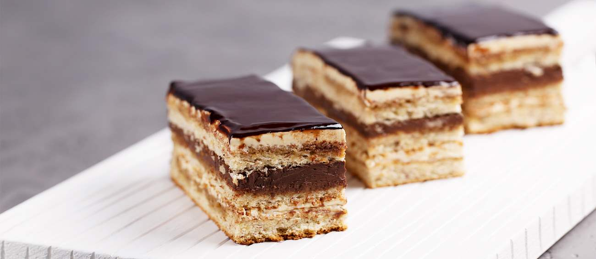
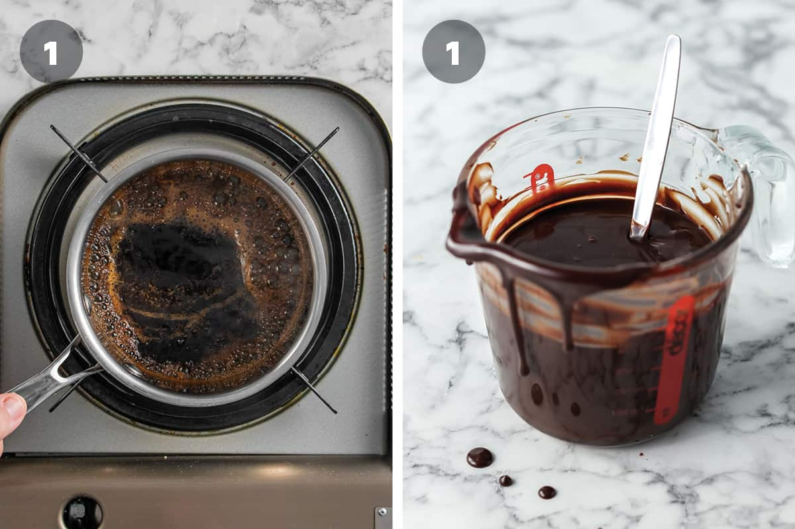
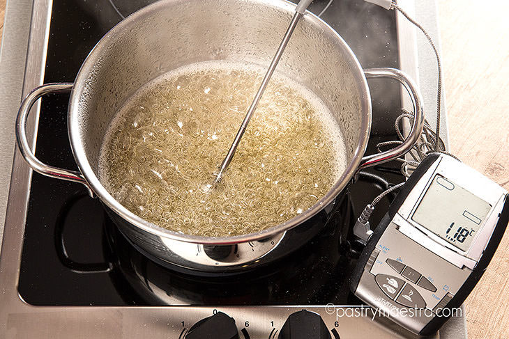
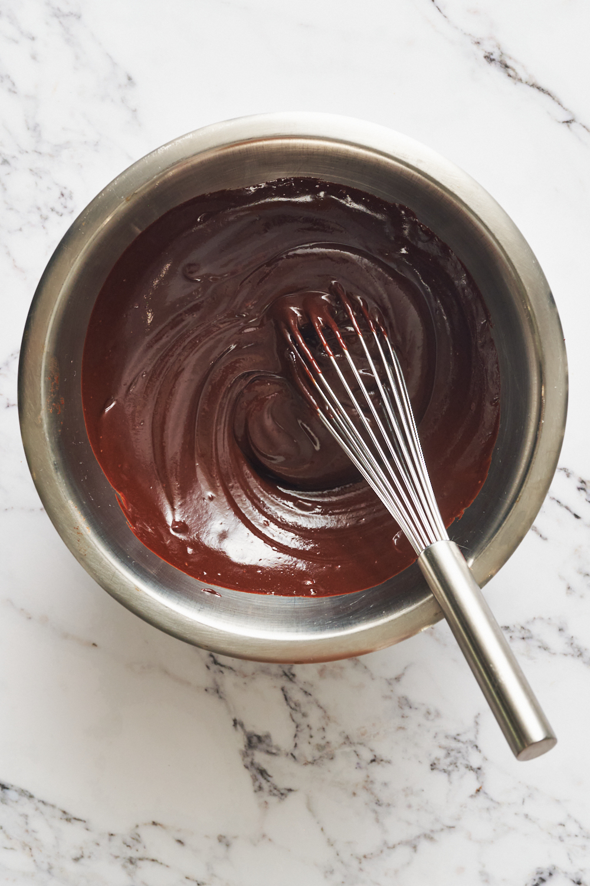
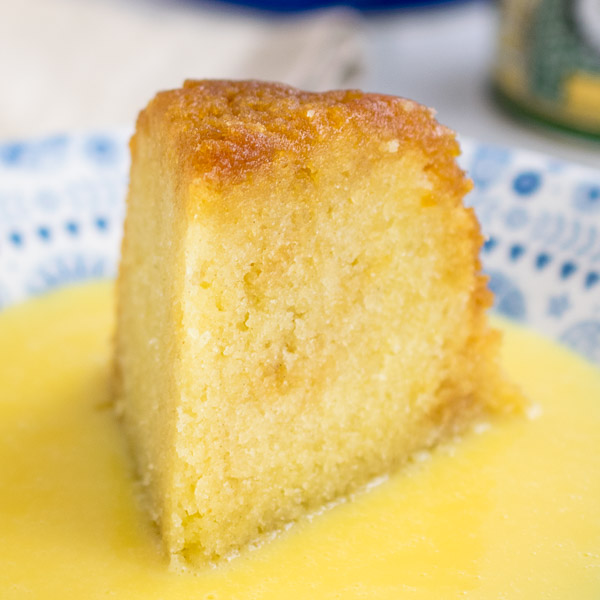
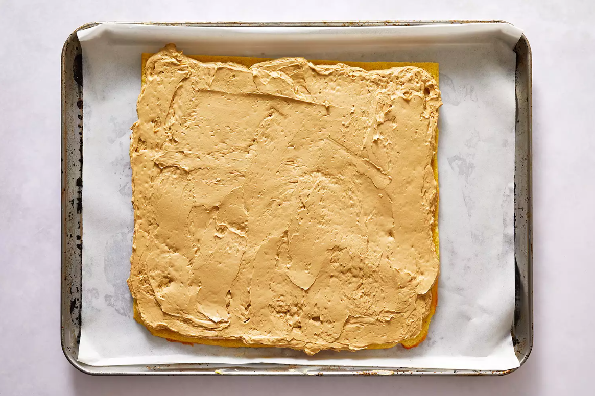
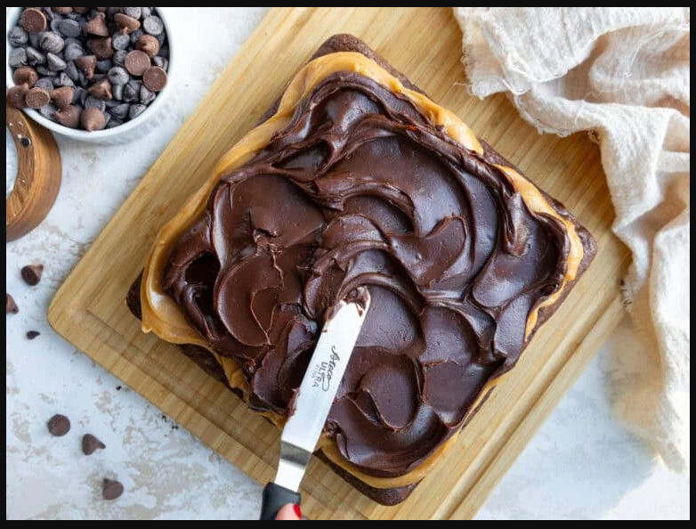
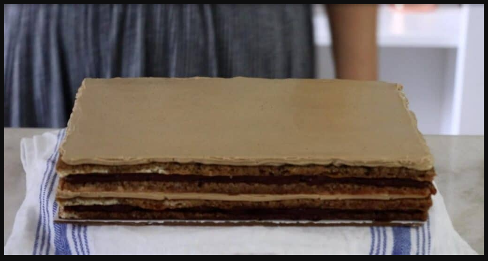
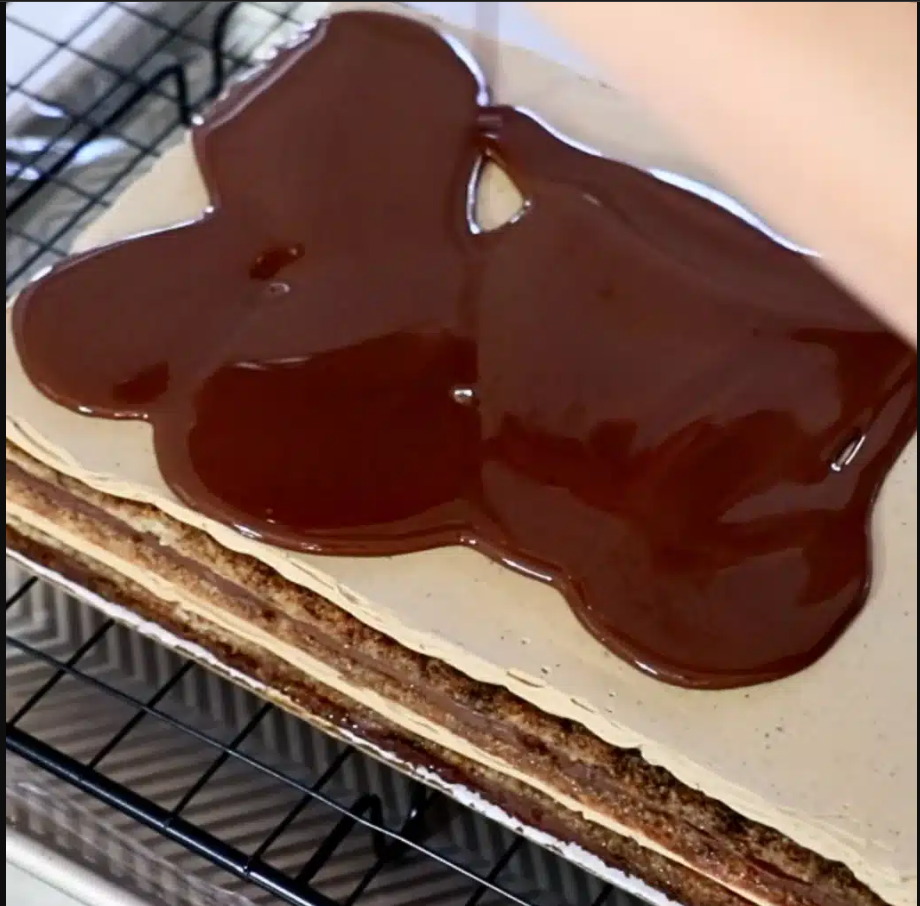
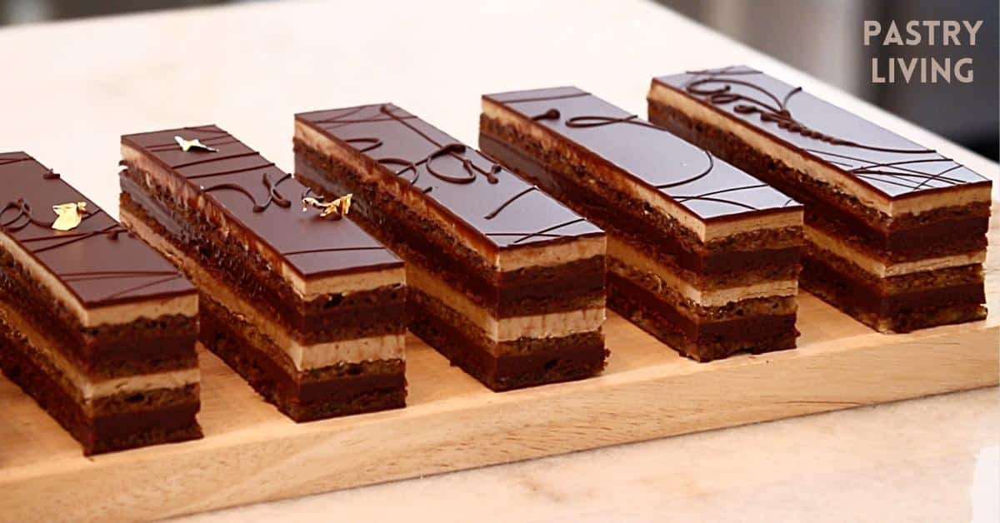

Classic Gateau Opera with precise layering, glossy chocolate finish, and
balanced coffee-chocolate flavour.

Recipe Details
Category
International Pastry / French Patisserie Classique
Difficulty Level
Advanced (Professional / Culinary School Level)
Prep Time
90 minutes
Cook Time
10 minutes
Chill / Set Time
2 - 4 hours
Yield
1 rectangular Opera Cake (approximately 18 - 20 portions)
Servings
18 - 20 portions
Skill Focus
Precision baking, temperature control, layered assembly
Allergen Notice
Contains gluten, eggs, dairy, nuts (almond)
Overview
The Opera Cake (Gateau Opera) is a
classic French layered pastry composed of
almond joconde sponge, coffee syrup, coffee French buttercream,
dark chocolate ganache, and a chocolate glaze.
Precision, balance, and clean execution are critical to meeting
international patisserie standards.
Characteristic features include:
Thin, even layers (typically 6 - 8)
Balanced bitterness (coffee & dark chocolate)
Sharp, clean edges and glossy finish
Internal structure of a classic Opera cake (layer by layer)
Component Breakdown
This pastry is produced in five independent components,
assembled in a controlled sequence:
Joconde Sponge (Almond Sponge)
Coffee Syrup
Coffee French Buttercream
Dark Chocolate Ganache
Chocolate Glaze (Glaçage)
Each component must be prepared separately and held under correct
conditions before assembly.
Opera cake components prepared independently before final assembly
Ingredients (Metric International Standard)
Joconde Sponge (Almond Sponge)
Almond flour (fine, blanched): 150g
Icing sugar: 150g
Whole eggs (room temperature): 5
Egg whites: 4
Granulated sugar: 30g
All purpose flour: 45g
Unsalted butter (melted, cooled): 30g
Coffee Syrup
Water: 120ml
Granulated sugar: 80g
Strong espresso or coffee extract: 20ml
Coffee French Buttercream
Egg yolk: 5
Water: 60ml
Unsalted butter (soft, 18 - 20°C)
Coffee extract: 15ml - 20ml
Dark Chocolate Ganache
Dark chocolate (60% - 70% cocoa): 250g
Heavy cream (35% fat): 200ml
Unsalted butter: 40g
Chocolate Glaze
Dark chocolate: 200g
Neutral oil or cocoa butter: 40g
Equipment Required
Stand or hand mixer
Silicone spatulas
Offset palette knife
Digital thermometer
Baking trays (30 x 40 cm)
Parchment paper or silicone mat
Acetate sheet (recommended)
Sharp pastry knife
Methodology (Professional Process Flow)
1. Joconde Sponge
Preheat oven to 220°C (static heat).
Whip whole eggs, icing sugar, and almond flour until pale and
aerated (ribbon stage).
In a separate bowl, whip egg whites with granulated sugar to
medium-stiff peaks.
Gently fold egg whites into almond mixture in three additions.
Sift in flour and fold carefully.
Fold in melted butter last.
Spread evenly (~ 5mm thickness) on lined tray.
Bake for 7 - 9 minutes until lightly golden.
Cool completely, then cut into 3 equal rectangles.
Assembly process of a classic Opera cake
2. Coffee Syrup
Heat water and sugar until fully dissolved.
Remove from heat and add coffee extract.
Cool to room temperature before use.

Simple coffee syrup, fully dissolved, no caramelisation
3. Coffee French Buttercream
Cook sugar and water to 118°C.
Whisk egg yolks on medium speed.
Slowly pour hot syrup into yolks while mixing.
Continue whipping until bowl is cool.
Gradually add butter, mixing until smooth and emulsified.
Add coffee extract and mix until homogeneous.

Sugar syrup cooked precisely to 118°C
Finished coffee French buttercream, smooth and emulsified
4. Chocolate Ganache
Bring cream to a gentle simmer.
Pour over chopped chocolate.
Rest 1 minute, then emulsify gently.
Add butter and mix until glossy.
Cool to spreadable consistency (approximately 30°C - 32°C).

Dark chocolate ganache, glossy and spreadable (30°C - 32°C)
Assembly Procedure (Critical Control Stage)
Layer Order (Bottom - Top)
Joconde sponge (soaked with coffee syrup)
Coffee buttercream
Joconde sponge (soaked)
Chocolate ganache
Joconde sponge (soaked)
Coffee buttercream
Chocolate glaze
Steps
Place first sponge on flat surface.
Brush evenly with coffee syrup (do not oversoak).
Spread buttercream (3mm - 4mm thickness).
Add second sponge, soak, then ganache layer.
Add final sponge, soak, and buttercream layer.
Chill 20 - 30 minutes before glazing.




Controlled layer assembly ensuring even thickness and alignment
Glazing and Finishing
Melt glaze ingredients gently (avoid air incorporation).
Cool glaze to 35°C - 38°C.
Pour over cold cake in one motion.
Smooth with minimal strokes.
Chill until set.
Trim all sides with a hot, clean knife for sharp edges.
Traditional finish: “OPERA” written in tempered chocolate or gold leaf
accent (optional).

Chocolate glaze poured at 35°C - 38°C in one motion for smooth finish
Mirror gloss finish with clean edges, hallmark of a professionally
executed Opera cake
Storage and Service Standards
Storage: 2°C - 4°C, airtight
Shelf Life: 48 hours (optimal texture)
Serving Temperature: 18°C - 20°C (rest 20 minutes
before service)

Sharp, clean cuts reveal precise internal structure and balanced
layers
Professional Quality Checklist
Notes for International / Hotel Standards
Use high-quality, fresh ingredients (especially chocolate and coffee).
Use European-style butter (82% fat) for optimal texture.
Use single-origin dark chocolate for superior flavour.
All layers should not exceed 2.5cm - 3cm total height.
Maintain strict temperature control during buttercream and ganache
preparation.
Ensure even soaking of sponge layers without oversaturation.
Precision and restraint take priority over decoration.
Adhere to hygiene and safety standards throughout preparation.


02.png)
.png)